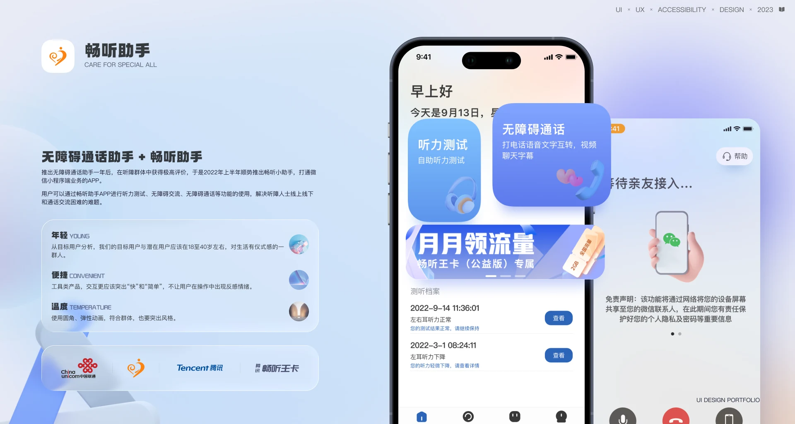
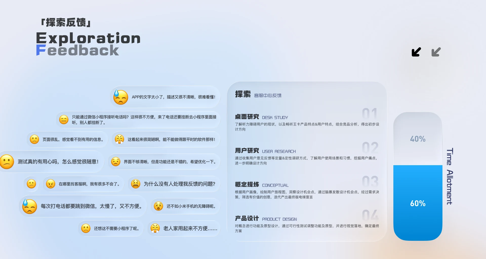
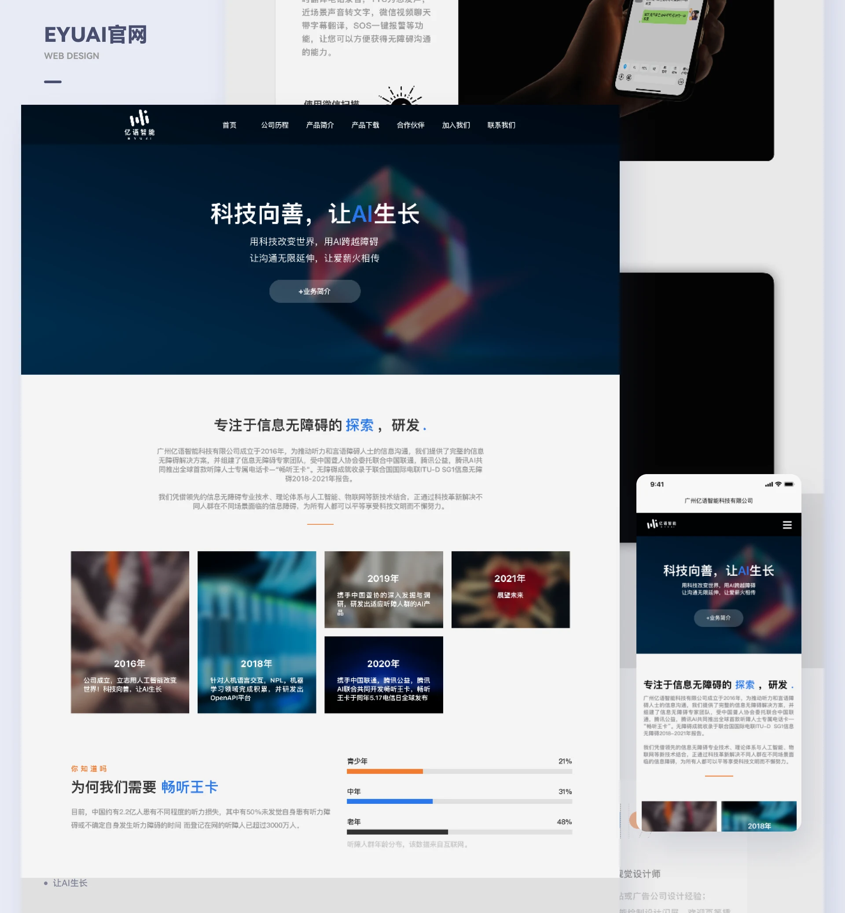
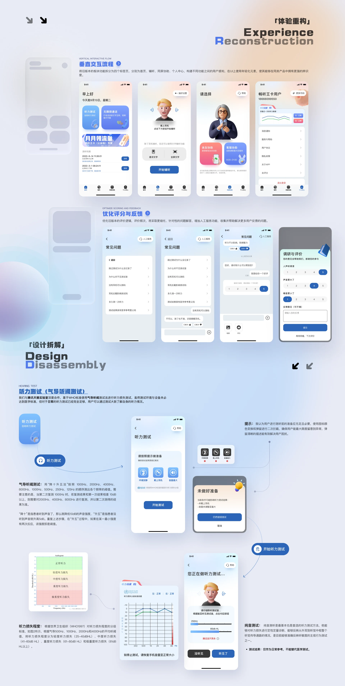
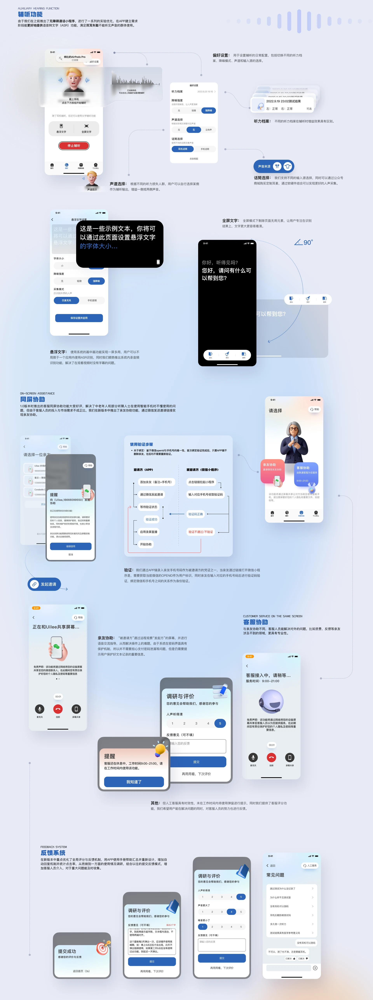

03 / Lab Project / 2020.01 - 2023.05
Changting Assistant App
XiaoWo Accessibility Call Assistant & Changting Assistant 2.0
Overview
A deep 2.0 rebuild with senior-friendly refinements pushed renewal on the core product up by 42%. Working from real complaints about the old version, clearer visual hierarchy and better guidance lifted both retention and paid conversion among the target group.
The problem
A year after the accessibility call assistant launched, the response from the hard-of-hearing community was strong enough that we shipped Changting Assistant in the first half of 2022, extending the service into a WeChat mini program and a standalone app. Users can run hearing tests, hold accessible conversations and make accessible calls — covering the situations where deaf and hard-of-hearing people struggle most: in person, online and on the phone.
My answer
We started from positioning, competitor analysis and user research, then sorted the pain points that actually mattered — what people really need, and what they expect this product to become. Layer by layer — structure, framework, surface, from the five elements of user experience — that gave us a concrete direction for the redesign.
Exploration & feedback
- Desk research
- User research
- Concept definition
- Problems & responses
Standards
When experience design meets a brand upgrade, the job isn’t drawing a new shape and picking a colour. Every decision has an argument behind it. What we need is a design position with a real point of view — close to the business, close to the strategy — one that can steer the work long after this release ships.
My Role
Led end-to-end design for the XiaoWo Accessibility Call Assistant and Changting Assistant, covering the two-way real-time ASR/TTS path and senior-friendly interfaces. Drew the call-path swimlane diagram myself and worked with engineering to get cloud round-trip latency low enough for live conversation. Worked with Tencent’s Tianlai Lab to ship a native-grade AI hearing aid experience.
Screens





Other work
- LKSY · All Platforms2024 - 2026
- KEKE · IP Design2025.03
- XiaoWo Accessibility Call Assistant2020.01 - 2023.05
- Umeta 2.12023.07 - 2024.02
- Appleland Web2023.07 - 2024.02
- Modeller’s Circle2022.08 - 2023.01
- ZhiPing Smart Screen2021.07 - 2023.01
- Corporate Website Design2020 - 2023
Have something to build?
Available for remote UI/UX design outsourcing and freelance work: B2B dashboards, WeChat mini programs, mobile interfaces, accessibility design, prototypes and design specs.
Email 965333099@qq.com · WeChat and phone 18666099550